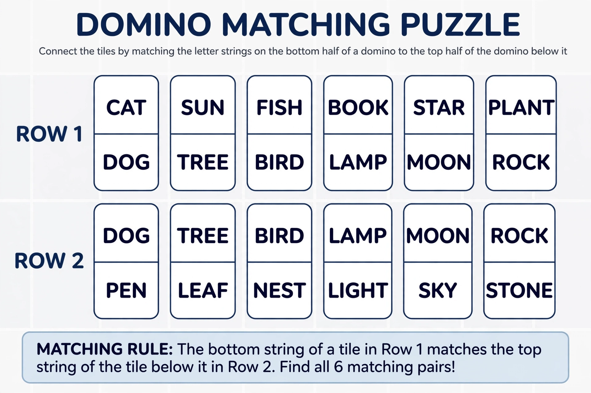

The Post correspondence problem is an undecidable decision problem that was introduced by Emil Leon Post in 1946. Because it is simpler than the halting problem and the Entscheidungsproblem, it is often used in proofs of undecidability.

Let A be an alphabet with at least two symbols. The input of the problem consists of two finite lists of words over A. A solution to this problem is a sequence of indices such that the concatenation of the corresponding words from the first list equals the concatenation of the corresponding words from the second list. The decision problem is then to decide whether such a solution exists.
The problem is often visualised in terms of dominoes, each bearing two strings, one on each side. A solution is a sequence of dominoes (repetitions allowed) such that the string formed by the top halves is the same as the string formed by the bottom halves.
| i | Top | Bottom |
|---|---|---|
| 1 | a | baa |
| 2 | ab | aa |
| 3 | bba | bb |
For this instance, the sequence 3, 2, 3, 1 is a solution: bba + ab + bba + a = bb + aa + bb + baa = "bbaabbabbaa".
Post showed that the correspondence problem is undecidable in general, by reduction from the acceptance problem for Turing machines. A bounded version of the problem, in which the solution length is bounded, is NP-complete. The problem remains undecidable even for small instances; it is known to be undecidable for as few as a small fixed number of domino pairs, while instances with only two pairs are decidable.